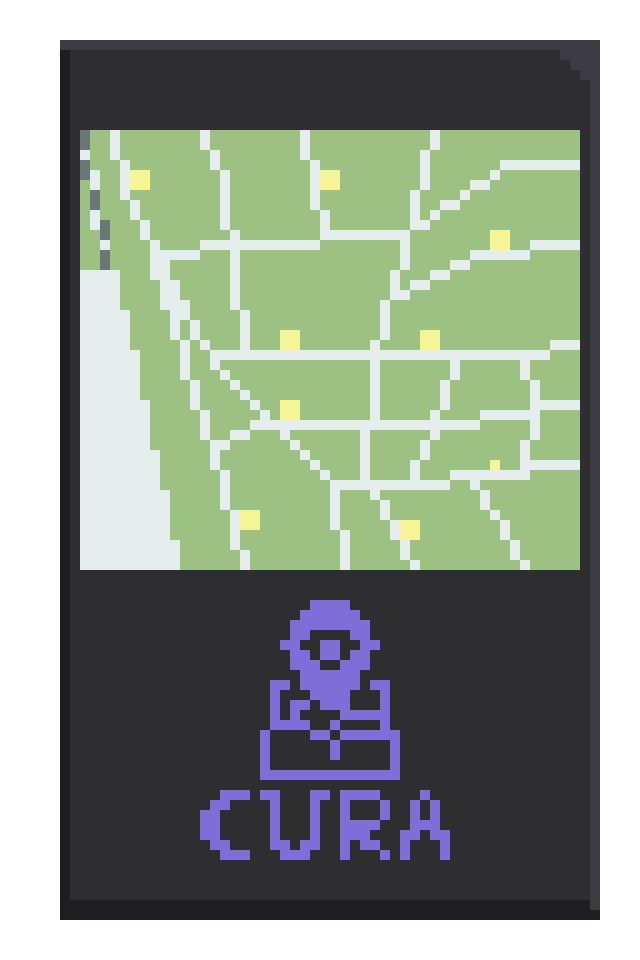
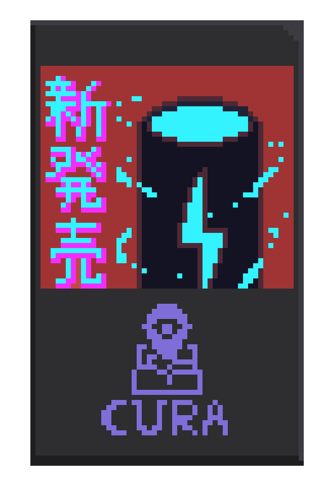

「CURAなび」とは
カメラやセンサーなど、街中で人の密集度や、どのような人がいるかを集計し、
スマートフォンにその混雑状況などを表示します。
そして、測ったデータを元に街中にある表示物を変化させることができます。
例えば、高速道路の混雑度合を表示するように看板が街中の混雑度を表示し、
混雑時必要とする人が増えるトイレの位置、レストランの位置などを表示することができます。

街中にある掲示物などをみることによって
現在の混雑状況からセールやイベントがどこで行われているかがわかります。
また、企業側も収集した情報から人と連動して効率の良い広告を流し、
今までの広告費を削減することも可能になります。
これにより、自分の知りたい情報のみならず新たな趣味思考を取り込むことができる
刺激とよりよい発展が期待できる街を作り出すことができると考えます。
